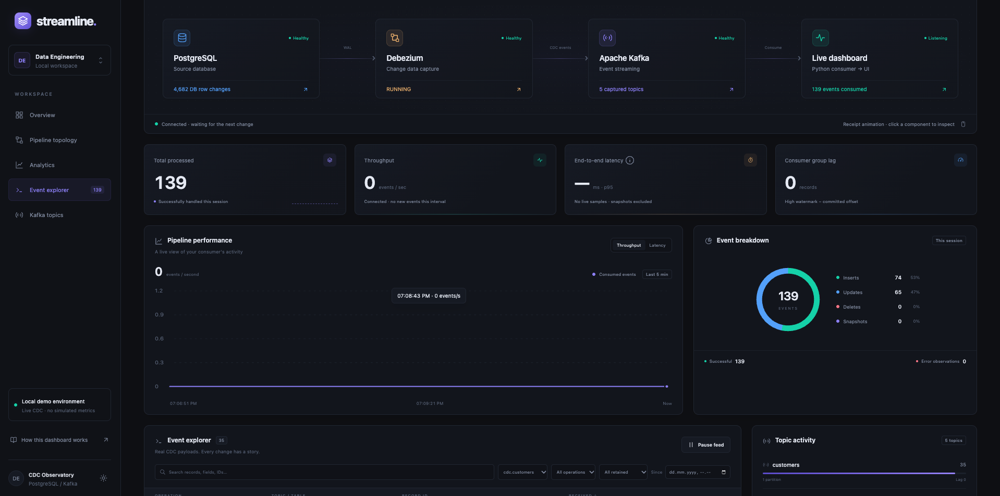

Catch the change as it happens
Start with a snapshot of existing records, then follow committed changes through PostgreSQL logical replication. Debezium turns database activity into a continuing stream of events.
Change data capture · Data Engineering
An order is placed. A price changes. Stock moves. Follow each committed change from PostgreSQL through Debezium and Kafka to a live dashboard that makes the event stream visible.
Project overview
An online store never stands still, and its data tells the story. This project captures committed PostgreSQL changes with Debezium, streams them through Kafka, and processes them in Python. A live Node.js dashboard brings the activity into view, connecting each database change to the systems that carry it.
Why this project
What does it take to turn a database update into an event you can inspect? Explore the full journey through replication, Kafka topics, Python handlers, and live monitoring in one reproducible local environment.
Start with a snapshot of existing records, then follow committed changes through PostgreSQL logical replication. Debezium turns database activity into a continuing stream of events.
Route customer, product, order, order-item, and inventory changes into dedicated Kafka topics, where a Python consumer picks them up and reports its progress.
Connect the events you see to the metrics that explain them. Explore throughput, observed latency, committed consumer lag, and component health alongside recent changes.
Data pipeline
Follow an order beyond the checkout. Generated commerce activity creates real database changes that travel through six connected stages, from a committed transaction to an observable browser event.
Create customers, place orders, move purchases toward delivery, and adjust stock and prices. A Python and Faker generator gives the pipeline a changing storefront to follow.
PostgreSQL 16 holds the commerce records. Once transactions commit, logical replication through pgoutput exposes their changes to the capture layer.
Debezium captures the opening snapshot and subsequent changes, preserving before-and-after row images so each event carries the context behind the update.
A Kafka broker running in KRaft mode stores changes across five commerce topics, giving the consumer a structured stream of customer, catalog, order, and inventory activity.
Python handlers log incoming changes and track session activity. Atomic JSON snapshots share those observations with the dashboard through a Docker volume.
Node.js combines consumer telemetry with infrastructure checks, then sends fresh observations to the browser through Server-Sent Events. Watch activity unfold from one dashboard.
Database & event model
Behind every order is a connected set of customers, products, line items, and stock records. The ecommerce schema brings them together, while CDC events retain source metadata and operation codes that explain where each change began.
customersProfiles and loyalty tiersproductsCatalog and pricingordersPurchases and lifecycle statusorder_itemsProducts within each orderinventoryStock and available quantity{
"before": { "tier": "silver" },
"after": { "tier": "gold" },
"source": {
"db": "enterprise_db",
"schema": "ecommerce",
"table": "customers"
},
"op": "u"
}c create, u update, d delete, and r snapshot read. The generator creates and updates records; deletes can be tested manually.Live observability
Open the dashboard to see database changes become visible activity. Consumer telemetry and read-only infrastructure checks power its event feed, charts, and diagnostics. The screenshot below captures a moment from the running local pipeline.

See how quickly events arrive and how long they take to reach the consumer. Observed throughput and rolling p95 latency reveal the stream’s recent rhythm across up to five minutes of chart history.
Narrow the latest 200 events by topic, operation, time, or payload. Pause the feed to examine a moment in detail while the pipeline keeps processing.
Open an event and compare the row before and after the change. Inspect its raw envelope, Kafka partition, and offset to connect the business update with its place in the stream.
Look beyond the event feed to PostgreSQL health, connector task states, topic partitions, and committed consumer lag. Bring the supporting infrastructure into the same view.
Fresh observations reach the browser through Server-Sent Events. Automatic reconnection and visible stale-data states help you tell when the view is current.
Start the stack with Docker Compose, register the connector, and launch the generator. Open localhost:8090 to explore how your own database changes travel through the pipeline.
Event counts reset with the consumer session. Latency uses retained live events and depends on clock agreement. Consumer handlers currently log changes; a downstream database sink is not implemented.
Technology
Have data that needs to move, systems that need to connect, or a pipeline you want to understand? Tell me what you’re building, and let’s discuss how to turn it into a dependable flow of useful data.